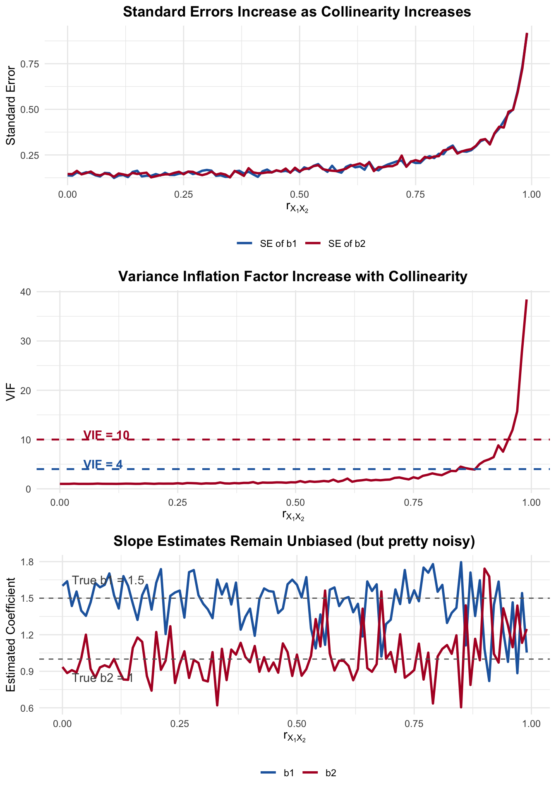
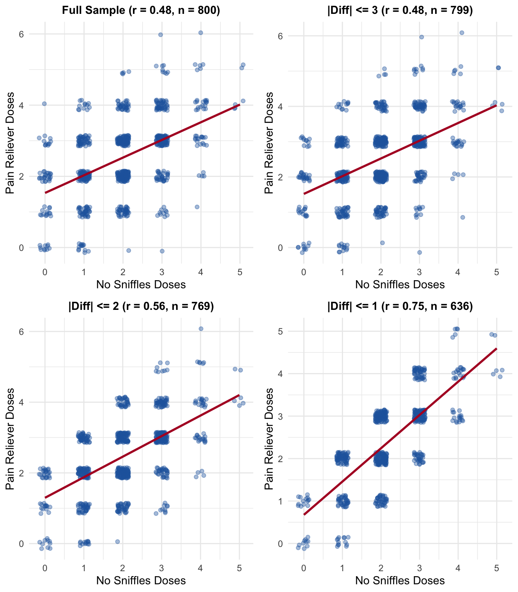

We’ve spent a good deal of time discussing the properties of the OLS estimator – unbiasedness, efficiency, and their tradeoff. We’ve also examined what happens when assumptions like homoskedasticity are violated. Now we turn to a different kind of problem, one that doesn’t technically violate any Gauss-Markov assumption, but can adversely impact your results nonetheless: multicollinearity.
9.2 Data Problem, or Estimator Problem?
We can split multicollinearity into two categories: perfect and imperfect. Perfect multicollinearity is a data problem. It means the data simply do not contain enough information to estimate the model. Imperfect multicollinearity is an estimator problem. The data contain enough information, but the OLS estimator is not doing a good job of extracting it.
9.3 Perfect Collinearity
With perfect collinearity, the OLS estimator is not defined, there is no OLS solution. Consider the model,
When \(r_{X_1 X_2} = 1\), the denominator for \(\hat{\beta}_2\) and \(\hat{\beta}_3\) is zero, and \(\mathbf{X^T X}\) is singular. You literally cannot invert the matrix independent variable matrix – the estimator \((\mathbf{X^T X})^{-1}\mathbf{X^T y}\) does not exist; it is undefined.
Why? Think about it intuitively. If \(X_1\) and \(X_2\) are perfectly correlated, there is no way to tell them apart. The regression cannot “decide” how much of the variation in \(y\) to attribute to \(X_1\) versus \(X_2\). The variables carry identical information.
More precisely, we should use the term “multicollinearity.” If one variable is a perfect linear combination of \(k\) other variables in our model, the same problems exists:
\[X_j = C_1 d_1 + \cdots + C_k d_k\]
9.3.1 Dummy Variables and Multicollinearity
If any variable is determined by some combination of \(X_k\) (i.e., \(C \neq 0\)), there will exist perfect multicollinearity. This problem is encountered in different ways, but let’s consider dummy variables.
Recall from our earlier discussion of categorical predictors. With \(k\) categories, we include \(k-1\) dummies; the omitted group serves as the reference category. The reason we omit one is precisely multicollinearity. Let’s consider party identification, coded as Republican, Independent, and Democrat. We create dummy variables:
\(D_{\text{Rep}} = 1\) if Republican, 0 otherwise
\(D_{\text{Dem}} = 1\) if Democrat, 0 otherwise
\(D_{\text{Ind}} = 1\) if Independent, 0 otherwise
Notice that \(D_{\text{Rep}} + D_{\text{Dem}} + D_{\text{Ind}} = 1\) for every observation – because every person is exactly one of these three things. But the intercept column in \(\mathbf{X}\) is also a column of 1s. So the three dummy columns sum to produce the intercept column. That’s a perfect linear dependency among the columns of \(\mathbf{X}\), which means \(\mathbf{X^T X}\) is singular and we cannot estimate the model. This is precisely why – with an intercept – we include \(k-1\) dummy variables.
Why? The model with all \(k\) dummies and an intercept is:
But since \(D_{\text{Ind}} = 1 - D_{\text{Rep}} - D_{\text{Dem}}\), the Independent dummy is a perfect linear function of the other two dummies and the intercept. There is no unique solution to the equation.
What happens in R when this occurs? It will just drop one variable to estimate the model. When we drop one category (say, Independents), the intercept now represents the baseline for that group, and the remaining dummy coefficients represent differences from that baseline. An Independent is simply a case when both \(D_{\text{Rep}} = 0\) and \(D_{\text{Dem}} = 0\). The choice of reference category is arbitrary in terms of \(\hat{Y}_i\) – you’ll get the same predicted values regardless – but remember that it will change the interpretation of the dummy coefficients.
Notice that R sets the coefficient on d_ind to NA – it detects the perfect linear dependency and removes a redundant variable.
And once again, the two specifications produce identical predicted values. It’s entirely avoidable once you understand that one variable is linearly dependent on the others, specifically that \(\sum_{j=1}^k D_j = 1\).
# Create data with a perfect linear dependencyset.seed(42)n <-100x1 <-rnorm(n, 10, 2)x2 <-2* x1 +5# x2 is a perfect linear function of x1y <-3+1.5* x1 +rnorm(n)# Try to fit the modelmodel_perfect <-lm(y ~ x1 + x2)summary(model_perfect)
Call:
lm(formula = y ~ x1 + x2)
Residuals:
Min 1Q Median 3Q Max
-1.88842 -0.50664 0.01225 0.54106 2.86240
Coefficients: (1 not defined because of singularities)
Estimate Std. Error t value Pr(>|t|)
(Intercept) 2.77584 0.45043 6.163 1.59e-08 ***
x1 1.51358 0.04383 34.531 < 2e-16 ***
x2 NA NA NA NA
---
Signif. codes: 0 '***' 0.001 '**' 0.01 '*' 0.05 '.' 0.1 ' ' 1
Residual standard error: 0.9083 on 98 degrees of freedom
Multiple R-squared: 0.9241, Adjusted R-squared: 0.9233
F-statistic: 1192 on 1 and 98 DF, p-value: < 2.2e-16
9.3.2 The Mathematical Problem
Let’s connect this back to the formulas we derived earlier; the model coefficients:
This requires \(\mathbf{X^T X}\) to be invertible. And recall – a matrix is invertible only if its determinant is nonzero. When one column of \(\mathbf{X}\) is a linear combination of the others, \(\det(\mathbf{X^T X}) = 0\), the matrix is singular, and no inverse exists.
9.4 Imperfect Multicollinearity
More frequently, we are in the situation where \(0 < r_{X_1 X_2} < 1\). This is now a data problem, and the OLS estimator is still BLUE. Imperfect collinearity is not a violation of the Gauss-Markov assumptions. The OLS estimator is still unbiased, and the variance is still correctly estimated.
So why should we care? The problem is that the variance of the OLS estimator can become very large, which means our estimates are very imprecise.
The data provide enough information to estimate the model, but the OLS estimator is not able to extract precise estimates.
This type of collinearity is also incredibly common. Variables are correlated – sometimes strongly – but not perfectly. Education and income are correlated. Age and experience are correlated. In political science, partisanship and ideology are correlated. The question is: how much correlation is too much?
We discussed the variance of the estimate in Part I. Another way to write the of the OLS estimator is given by,
where \(R^2_j\) is the \(R^2\) from regressing \(X_j\) on all the other independent variables in the model. This is important – it’s not the \(R^2\) from the main regression. It’s the \(R^2\) from the auxiliary regression of one predictor on all the others. The term,
\[\frac{1}{1 - R^2_j} = \text{VIF}\]
is called the Variance Inflation Factor. Or equivalently, \(\sqrt{\text{VIF}}\) tells us how much the standard error of \(b_j\) is inflated relative to the case with no collinearity.
As the VIF increases, \(\text{var}(b_j)\) will increase. But the OLS estimator is still BLUE. The problem is not whether one can obtain an unbiased estimate – we definitely can. We can also obtain the “correct” variance – but it may be quite large. This is the key point that practitioners often miss. Multicollinearity is not a bias problem. It is a precision problem. Your estimates are right on average, but any single estimate may be way off.
OLS is still BLUE in the presence of imperfect multicollinearity. The estimator is unbiased. The variance is correctly estimated. The problem is that the variance itself is large. Don’t confuse “large variance” with “biased estimates” – these are fundamentally differrent things. Think back to how we statistically demonstrated these concepts.
Let’s see how this works in practice.
Let’s start by simulating data, but let’s simulate data such that the correlation between our predictor varies. Then let’s estimate the model to see what happens to the standard errors as the correlation changes.
We’ll simulate data and estimate the models repeatedly, varying the correlation parameter.
We’ll then plot the standard errors as a function of the correlation between the predictors.
We’ll also plot the VIF, as well as the slope estimates.

Figure 9.1: As collinearity increases: standard errors explode, VIF rises, but slopes remain unbiased
Three things to notice.
First, the standard errors increase drastically as the correlation approaches 1. At \(r = 0.9\), the standard errors are already more than double what they are at \(r = 0\). At \(r = 0.99\), they’re rather large.
Second, the VIF tracks this exactly. It crosses the the threhold of 4 around \(r \approx 0.87\), and 10 around \(r \approx 0.95\).
Third – and this is the critical point – the slope estimates bounce around their true values at every level of correlation. They are still unbiased. The estimates get noisier as collinearity increases, but they are centered on the true value. Again, the estimates are BLUE but noisy.
9.5 Why This Happens: The “No Sniffles” Problem
Think about it this way. Suppose \(X_1\) and \(X_2\) are uncorrelated. When we add \(X_2\) to the model, the variation in \(X_1\) that “explains” \(y\) is distinct from the variation in \(X_2\) that explains \(y\). Now suppose \(X_1\) and \(X_2\) are highly correlated. Most of the variation in \(X_1\) is also present in \(X_2\). The regression has to parse out each variable’s uniqueness – how much each contributes to \(y\).
Let’s make this concrete with a fictious – and cautionary – example. A startup firm has just launched “No Sniffles” a homeopathic allergy drug. To build their case for efficacy, they analyze data from a large non-randomized survey of Arizona residents conducted during peak allergy season (March through June). Respondents report how many doses of “No Sniffles” they took, how many pain relievers (Ibuprofen, Advil, etc.) they took, and answer the question: “How much was your headache reduced?” on a 0–10 scale.
During allergy season in Arizona, pollen triggers sinus headaches. People who suffer from allergies tend to reach for both an allergy remedy and a pain reliever at the same time. The usage of “No Sniffles” and pain relievers are correlated – not because one causes the other, but because allergy season drives both. The startup’s regression will struggle to isolate “No Sniffles’” unique effect on headache reduction from the effect of pain relievers.
Figure 9.2: During Arizona allergy season, usage of ‘No Sniffles’ and pain relievers are correlated – creating collinearity that makes it hard to isolate each drug’s effect
Notice the structure: allergy season drives people to take both drugs, creating the correlation. The truth is that pain relievers genuinely and substantially reduce headaches (\(\beta_2 = 1.8\)), but “No Sniffles” – being homeopathic – has only a very modest placebo effect (\(\beta_1 = 0.15\)). Can the startup’s regression tell these apart?
9.5.1 Simulating the Survey
Let’s simulate 800 Arizona residents surveyed during March–June. The true model is:
With all 800 respondents, the correlation between “No Sniffles” and pain reliever usage is moderate. Let’s see what the regression finds.
library(car)cat("Correlation between No Sniffles and Pain Relievers (full sample):",round(cor(survey_data$no_sniffles, survey_data$pain_relievers), 3), "\n\n")
Correlation between No Sniffles and Pain Relievers (full sample): 0.478
Call:
lm(formula = headache_reduction ~ no_sniffles + pain_relievers,
data = survey_data)
Residuals:
Min 1Q Median 3Q Max
-3.03170 -0.64028 0.00806 0.67851 3.08922
Coefficients:
Estimate Std. Error t value Pr(>|t|)
(Intercept) 1.23469 0.09253 13.344 <2e-16 ***
no_sniffles 0.08968 0.03742 2.397 0.0168 *
pain_relievers 1.75255 0.03599 48.695 <2e-16 ***
---
Signif. codes: 0 '***' 0.001 '**' 0.01 '*' 0.05 '.' 0.1 ' ' 1
Residual standard error: 0.9692 on 797 degrees of freedom
Multiple R-squared: 0.8018, Adjusted R-squared: 0.8013
F-statistic: 1612 on 2 and 797 DF, p-value: < 2.2e-16
cat("\nVIF:\n")
VIF:
vif(model_full)
no_sniffles pain_relievers
1.295352 1.295352
With moderate collinearity, we can probably tell the drugs apart – pain relievers show a strong effect, and “No Sniffles” shows a small one.
9.5.3 Subsetting: Increasing the Collinearity
Imagine different sampling strategies the startup might use. As we restrict the sample to respondents whose “No Sniffles” and pain reliever doses are more similar. There is a stronger relationship. What happens?
Table 9.1: As we restrict to respondents with similar dosing patterns, collinearity increases and the regression can no longer distinguish the effects
Subset
N
r(NS, PR)
b_NoSniffles
SE_NoSniffles
b_PainRelief
SE_PainRelief
VIF
no_sniffles
Full Sample
800
0.478
0.090
0.037
1.753
0.036
1.30
no_sniffles1
|Diff| <= 3
799
0.482
0.092
0.038
1.750
0.036
1.30
no_sniffles2
|Diff| <= 2
769
0.561
0.094
0.041
1.761
0.040
1.46
no_sniffles3
|Diff| <= 1
636
0.747
0.059
0.059
1.818
0.056
2.26

Figure 9.3: As we restrict to similar dosing patterns, the data cloud aligns along the diagonal – collinearity makes it impossible to separate the two effects
The startup’s problem is now obvious. With the full sample and moderate collinearity, the regression can tell the drugs apart: pain relievers have a large, significant effect, while “No Sniffles” a more modest one.
But if the correlation is higher– people who always take both together – the standard errors inflate, the VIF increases, and we can no longer distinguish a drug that genuinely works (\(\beta_2 = 1.8\)) from one that barely works (\(\beta_1 = 0.15\)).
9.5.4 Randomization
This is exactly the danger of non-randomized data with correlated treatments. A randomized trial would independently assign “No Sniffles” and pain reliever usage; this then break the correlation between right hand side variables. The observational survey during allergy season – where everyone reaches for both drugs at once – cannot do this.
9.6 Detecting Multicollinearity
When does this matter? What should we do?
You obtain a large \(R^2\) value, significant F values, but non-significant t-tests (and large confidence intervals). This is the classic indicator. The model as a whole is explaining variation in \(y\), but you can’t pin down a particular effect. Everything is non-significant. There is a divergence between the F-test – an indicator of fit – and the t-tests (the test of individual coefficients).
To explore if this is problematic, we might first obtain \(r_{xx}\), the correlation matrix of independent variables, and you observe an entry of 0.80 or greater. But, remember, this may not be immediately transparent from the table, if \(X_k\) is a linear combination of some set of variables. A variable might not be highly correlated with any single other variable, but could be strongly predicted by a combination of variables.
Examine the VIF. If VIF exceeds 4, or \(\sqrt{\text{VIF}}\) exceeds 2, collinearity may be an issue. Some textbooks use 10 as the threshold. It’s an indicator, a useful heuristic.
9.7 Common Mistakes
This is where students – and researchers – tend to go wrong. Let me walk through the mistakes I see most often.
9.7.1 Mistake 1: Dropping Variables to “Fix” Collinearity
The most common response to multicollinearity is to drop one of the correlated variables. Sometimes this is the right thing to do. Often it is not.
Suppose you’re modeling Trump’s vote margin in Arizona precincts as a function of median household income and median age. They’re correlated in your data (older populations often live in areas with different income distributions), so the standard errors are large. You drop median age. Now the standard errors on income are small and the coefficient is significant. Fixed it. Right?
If median age actually affects voting patterns, then dropping it introduces omitted variable bias. You’ve traded a precision problem for a bias problem. The coefficient on income now captures both the direct effect of income and the indirect effect through its correlation with age. Your estimate is biased – and a biased estimate with a small standard error can be worse than an unbiased estimate with a large one.
Do not drop theoretically important variables just because they are correlated with other predictors. An unbiased estimate with a large standard error is preferable to a biased estimate with a small standard error. If you can’t reject the null, that’s informative – it means the data don’t contain enough information to distinguish between the effects.
9.7.2 Mistake 2: Concluding That the Variables “Don’t Matter”
When multicollinearity inflates standard errors and you fail to reject \(H_0: \beta_j = 0\), it’s tempting to conclude that the variables don’t affect \(y\). It now becomes an issue of statisticaly power – you simply don’t have enough information to distinguish between the effects – but that doesn’t mean those effects aren’t there. Failing to reject a null does not mean the null is true.
Instead, it means you lack sufficient evidence to conclude that the variable has an effect, given the other variables in the model. With highly collinear predictors, the individual t-tests have low power; our ability to correctly reject a null hypothesis when it is false is diminished. You should expect non-significant results, even if the variables truly matter.
9.7.3 Mistake 3 Using Stepwise Regression
You’ll occasionally hear about stepwise regression procedures, where analysts iterate through different specifications and settle on a model. Maybe then the researcher does some additional work to justify the final model. This is atheoretical and should be avoided. Recall that a “correct” regression model must be correctly specified – and that requires theory, not data-driven selection.
9.7.4 Mistake 4: Ignoring the Problem Entirely
On the other end, some researchers simply ignore multicollinearity and report their results as if nothing is wrong. Unfortunately, this can lead to incorrect conclusions from the “non-significant” findings.
9.8 The Mean Squared Error**
The mean squared error (MSE) is a measure of the expected squared difference between the estimator and the true parameter value:
\[
MSE(\hat{b})=E[(\hat{b}-b)^2]
\]
To see how this decomposes into variance and bias, add and subtract \(E[\hat{b}]\) inside the squared term:
We can always evaluate and compare linear models using the MSE or something akin to the MSE. The MSE is a function of both the variance of the estimator and the bias of an estimator.
9.9 The Ridge and Lasso Estimators
In statistics, it is common to hear about the so-called bias-variance tradeoff. Maybe we prefer a somewhat biased model, if it is estimated with more precision, or perhaps we prefer an unbiased model, even if it is estimated with less precision.
While the OLS model is BLUE in the presence of multicollinearity, severe multicollinearity (perhaps discovered by a large VIF or set of VIFs), can have adverse consequences. Recall that it increases the probability of Type II error, by way of large standard errors and small test-statistics; we may observe a very large \(R^2\), yet no statistically significant effects; and/or some coefficients may be large and signed in the wrong direction – due to a large amount of error, of course.
Let’s apply an alternative method then for model selection, what’s known as regularization or shrinkage. The logic of these models are relatively simple: Penalize regression parameters that are large. Why would we want to penalize a model with large parameters?
One of the consequences of multicollinearity is that it will lead to large coefficients. So, lets penalize large coefficients.
9.9.1 Ridge Estimator
The ridge estimator discussed extensively in Hastie, Tibshirani, and Friedman (2013, 63). The idea is straightforward:
The part on the left is well-known. We’re just calculating the sum of squared residuals Yet, instead of just minimizing the SSR, we’re minimizing \(SSR+\lambda\sum_Jb_j^2\). The \(\lambda\) parameter penalizes the \(b_j\) parameters. It’s a value that is greater than or equal to zero. If it is zero, the model reduces to OLS. If it is non-zero, there is some degree of “shrinkage.” The influence of the parameter (on the left), is canceled by the term on the right (Hastie, Tibshirani, and Friedman 2013, 64),
As we discussed then, we’re adding a constant to the diagonals of the \(\textbf{X}^T\textbf{X}\) matrix. The degree of bias is determined by the size of \(\lambda\), and a consequence of this is that we also decrease the variance of the estimate. The ridge regressor will be biased, but it may have smaller variance (relative to OLS).
How do we choose \(\lambda\)? This uses 10-fold cross validation. So, split the data into 10 samples. One sample is held to be the testing sample. We fit the model on the \(k-1=9\) remaining samples, and calculate the Root Mean Squared Error on the testing sample. We then average. We do this for a vector of potential \(\lambda\) values. We plot the results and choose the value of \(\lambda\) with the smallest RMSE.
Let’s apply Ridge regression to our Arizona precinct data, modeling Trump’s vote margin as a function of median household income, percent Latino population, median age, and the Gini index. The plot shows the cross-validation results, with the optimal \(\lambda\) indicated. We can see that there is too much shrinkage near the right of the figure and the RMSE is too large. However, the lowest RMSE is not when \(\lambda=0\). Note the difference between the Ridge coefficients and the OLS estimates!
Figure 9.4: 10-fold cross validation for Ridge regression: selecting the optimal lambda
9.9.2 Choosing Lambda: Min vs 1-SE Rule
The cross-validation plot shows two important values, marked by vertical dashed lines:
lambda.min: The value of \(\lambda\) that minimizes the cross-validation error (lowest RMSE). This gives the best predictive performance on the training data.
lambda.1se: A larger \(\lambda\) value selected using the “1 standard error rule.” This chooses the most regularized (simplest) model whose error is within one standard error of the minimum.
Why use lambda.1se instead of lambda.min? The 1-SE rule reflects a preference for parsimony and guards against overfitting. Models with slightly higher \(\lambda\) are more stable – they have greater bias but lower variance. If two models have statistically indistinguishable performance (within one SE), we prefer the simpler one with more shrinkage. This is especially valuable when:
Your primary goal is prediction on new data, not just fitting the training data
You want more interpretable models with coefficients closer to zero
You’re concerned about overfitting in small samples
Lambda (min RMSE): 0.03001082
Lambda (1 SE rule): 0.08350689
Ridge vs OLS Coefficient Comparison:
Variable
Ridge (λ.min)
OLS
Difference
(Intercept)
0.9663
1.0710
-0.1046
Median Household Income
0.0000001
-0.0000000
0.0000001
% Latino
0.00094
0.00140
-0.00046
Median Age
0.0009
0.0001
0.0009
Gini Index
-0.2734
-0.1883
-0.0851
% Democrat
-0.02085
-0.02330
0.00246
% Independent
-0.00973
-0.01088
0.00115
Notice the difference relative to the OLS estimates! The ridge coefficients are shrunk toward zero. The degree of shrinkage depends on \(\lambda\) – a larger penalty means more shrinkage, more bias, but also more stability.
9.9.3 The Lasso Model
The ridge estimator does not shrink a parameter to zero. We may wish to know if a variable has no effect – the ridge estimator only “proportionately” shrinks the parameters (Hastie, Tibshirani, and Friedman 2013, 69). It’s thus not quite as useful in terms of model specification – i.e., allowing the data to determine the model (and its parameters). The lasso regression, originally proposed by Tibshirani (1996), takes a different approach (Hastie, Tibshirani, and Friedman 2013, 72):
What this means is that, conditional on \(\lambda\) this form of regularized regression will shrink the parameters to zero. The Lasso estimator is also quite easy to estimate in \(\texttt{glmnet}\). Simply change \(\alpha=1\).
Figure 9.5: 10-fold cross validation for Lasso regression
Lasso vs OLS Coefficient Comparison:
Variable
Lasso (λ.min)
Lasso (λ.1se)
OLS
(Intercept)
1.0344
0.7215
1.0710
Median Household Income
0.0000000
0.0000000
-0.0000000
% Latino
0.00108
0.00000
0.00140
Median Age
0.0000
0.0000
0.0001
Gini Index
-0.1457
0.0000
-0.1883
% Democrat
-0.02302
-0.01969
-0.02330
% Independent
-0.01014
-0.00399
-0.01088
9.9.4 The Bias-Variance Tradeoff in Regularization
We often encounter a tradeoff between bias and variance. The Ridge and Lasso estimators are biased models – they deliberately introduce bias to reduce variance. As \(\lambda\) increases:
Bias increases: coefficients are shrunk further from their true values
Variance decreases: estimates become more stable across different samples
In contrast, OLS is unbiased but can have large variance when collinearity is severe. The key insight: at some value of \(\lambda\), the MSE of Ridge/Lasso can be less than the MSE of OLS, even though Ridge/Lasso are biased.
This is precisely what cross-validation helps us find – the \(\lambda\) that optimizes this tradeoff. When multicollinearity inflates OLS standard errors to the point where individual coefficients are unreliable, Ridge or Lasso regression offer an alternative (with some degree of bias).
When to use Ridge/Lasso: - When your goal is prediction rather than unbiased inference - When you face severe multicollinearity (VIF > 10) - When you have many predictors relative to sample size - When you want to regularize model complexity
The following approach, however, is not a good solution to multicollinearity.
9.10 Dropping Relevant Variables
Often, the most appealing solution is to drop a variable. This may introduce a form of bias into the regression equation. For instance, assume the following true regression model:
\[Y_i=\beta_1+\beta_2X_1+\beta_3X_2+\epsilon_i\]
But – due to collinearity in your data, you go ahead and estimate:
\[Y_i=\alpha_1+\alpha_2X_1+\omega_i\]
\[\omega_i=\beta_3X_2+\epsilon_i\]
So you estimate \(a_1\) and \(a_2\).
The problem with this approach is that our estimate of \(\alpha_2\) represents two things: the direct effect of \(X_1\) but also the indirect effect of \(X_1\) on \(y\) through \(X_2\)
\(a_2=\) direct effect of \(X_1\) on Y, and the indirect effect of \(X_1\) on \(Y\) through \(X_2\)! It represents the unique impact of the covariate on the dependent variable and the effect shared with the excluded variable. The slope coefficient is biased – from how much \(r_{x_1,x_2}\) are correlated.
Think of it this way. The true regression equation is:
The estimator is not unbiased – in fact, it’s biased by however large the underlined component is.
So we can’t really drop relevant variables in the presence of collinearity. This is a classic example of where the solution may introduce more problems than the original problem of collinearity itself. One more time just to be sure: Don’t drop a relevant variable because of collinearity
9.11 A Summary
Table 9.2: Summary of Multicollinearity Consequences and Diagnostics
Feature
With Multicollinearity
Bias of OLS
None – still unbiased
Variance of OLS
Inflated (larger SEs)
BLUE property
Still BLUE
Individual t-tests
Low power, often non-significant
Overall F-test
May still be significant
R-squared
Unaffected
Coefficient stability
Sensitive to small data changes
Primary diagnostic
VIF > 4 or sqrt(VIF) > 2
The worst mistake you can make is to drop theoritically important variables to “fix” a problem that is really just the data telling you it doesn’t contain enough unique information to separate the effects. Report VIFs, discuss the implications, and resist the urge to let statistical convienence override substantive, theoretically informed reasoning (from scientific publications, theory).
Hastie, Trevor, Robert Tibshirani, and Jerome Friedman. 2013. The Elements of Statistical Learning: Data Mining, Inference, and Prediction. 2nd (corrected 12th printing). New York: Springer. https://doi.org/10.1007/978-0-387-84858-7.
Tibshirani, Robert. 1996. “Regression Shrinkage and Selection via the Lasso.”Journal of the Royal Statistical Society: Series B 58 (1): 267–88.